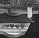

Although editors offered no overt theme for this issue, KS8 has come together as a cohesive whole. In retrospect, we can say with confidence that we wanted to rely on the natural currents that develop within a magazine on which so many people collaborate so closely. In reality, we felt set adrift at the prospect of assigning stories for a themeless issue.
Read the letter from the editor
Louder Than Words
How I Became a Beard
B.I.G. Poetry
Long Distance Runaround
Money
The Characters of Metallica
Then It Hit Me: Bareknuckle Boxing With Cat Power
Virgin Ears: The Melvins
Virgin Ears: The First Time I Heard Natural Dreamers' Natural Dreams
Virgin Ears: Jane's Addiction
Play Agression: What the Fuck is Indie Christian Rock?
Virgin Ears: Queen's A Night at the Opera
Reverse Angle
Stories With Pictures
Paper City
The Themeless Issue
Contributors
- Eve Englezos and Joshua E. Moutray Illustrators of Icecreamlandia
- Carla Costa Writer of Long Distance Runaround
- Lee Skirboll Writer of Money
- Jenna Feldman LTW Featurette Illustrator
- John Christian-Rauchenberg Writer of When Robots Need Rogain
- Jeremy Russell Writer of American Samurai
- David Jasper Writer of Trying to Surmise God
-  Manny Silva Cover Illustrator